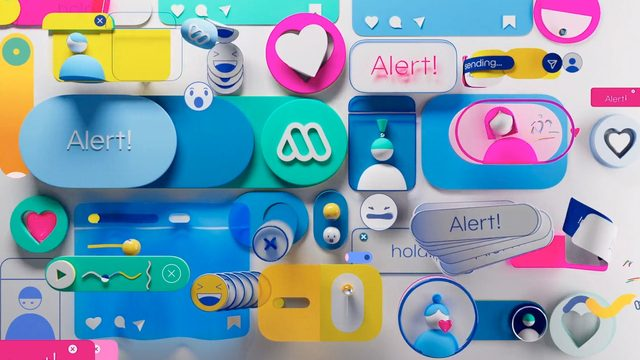
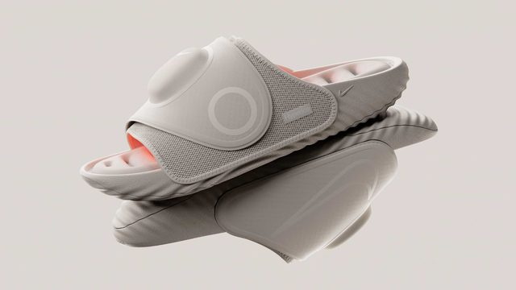
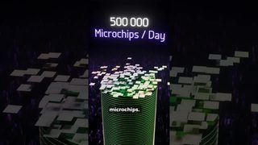

点封面在页面里播放（Vimeo / YouTube / X 需要代理；Vimeo 若没自动开始，再点一下播放键）。觉得好就点「喜欢」，有想法就写在下面的框里保存，我每天出日报前会读，存进偏好和审美库；会多找同类，但每天仍保持类型分散。
目录 01 IBM | Sovereign Core02 ADC 106th Annual Awards Launch Film03 Demo 2027 trailer04 Mega（智利电视台）品牌片05 Nike x Hyperice「Hyperslide」06 Spotify Mixing Tools07 How to present your ideas effectively08 Canva 动效规范示范片09 New MacBook Pro with PROLED XDR Display and Touch10 Why do hot objects glow?－ 看完剔除（12 条）拆 细拆：Tendril IBM Sovereign Core
01 3D质感 知识讲解
IBM | Sovereign Core
Tendril · Vimeo 06-30（超过 30 天） 【看过视频】
52 秒全片已下载，完整看过
好在哪 一个抽象的企业软件概念，全片只用方块讲：蓝白磨砂玻璃块铺满画面，要强调的那一组块变成红色或紫色发光；再套一个细线框立方体当「边界」，一排排圆角胶囊里只亮一颗。只有蓝、白两种主色，最后落在白底 IBM 标志可借 讲「数据在哪、谁能碰」这类看不见的概念时，用 Three.js 把数据做成一堆同色方块，只把主角染成对比色发光，再加线框盒子表示边界；整片不用一个角色。细拆见文末
展开全文
02 片头片尾 字体版式 剪辑节奏
ADC 106th Annual Awards Launch Film
DixonBaxi · Vimeo 10-13 【看过画面（抽帧）】
40 秒全片已下载
好在哪 开头很静：黑底正中一行很小的衬线字「For over a century」，金色 3D 标志慢慢转出来。然后突然炸开：荧光绿、玫红、大红轮流换底，「BAD IDEAS THAT WON'T DIE」大字配 3D 箭头乱飞，多语种单词竖排快闪。最后回到白底细线排版收尾。字体未识别可借 片头可以「静-炸-静」三段：先黑底小字慢慢进，再用几秒满屏撞色大字快切，最后白底细线排版收住。快切段只换底色和单词，版式骨架不动
展开全文
03 字体版式 剪辑节奏
Demo 2027 trailer
Studio Dumbar/DEPT® · Vimeo 05-05（超过 30 天） 【看过画面（抽帧）】
68 秒全片已下载
好在哪 荷兰 Demo 动态设计节的预告，几乎只有黑白。「DEMO」被拉伸压扁到撑满整屏，「THE」横向拉成一条，「28」鼓成气球形状；中间穿插脚手架、车站屏幕的实拍，最后黑底白字网址收尾。字体未识别（可变宽度的展示字体）可借 标题字不一定要动位置，只改字宽、字高，让一个词把画面撑满再缩回去，就很有冲击力。Remotion 里用可变字体的 wdth 轴，或者直接 scaleX/scaleY 做
展开全文
04 3D质感 UI动效
Mega（智利电视台）品牌片
Lumbre · Stash 10-28 【看过画面（抽帧）】

stashmedia.tv 69 秒全片已下载
好在哪 把手机通知、聊天气泡、爱心、提醒框都做成亮面塑料小玩具，白底上堆成一堆；再换成蓝底、黄底的大留白镜头，正中只放一个 logo 按钮。中间有小球沿着管道和同心圆轨道滚，手机、电视、平板里的界面也是一块块彩色积木可借 讲 App 或网络服务时，把界面元素做成有厚度的塑料块，而不是平面截图；满屏热闹的镜头和只放一个按钮的大留白镜头交替，观众眼睛能歇一下
展开全文
05 3D质感
Nike x Hyperice「Hyperslide」
Someform Studio · Stash 10-28 【看过画面（抽帧）】

stashmedia.tv 30 秒全片已下载
好在哪 全片只有米灰一种颜色：拖鞋像软陶捏的，泡泡一样鼓起来，鞋底有一圈圈水波纹；讲加热功能时，鞋里面透出一层橙红色的光。结尾标题「HYPERSLIDE」先是一个个鼓鼓的气球字，再压平成浮雕字可借 整片只用一种中性色，只在讲到关键功能的那一下给一次暖色光；标题字的材质和产品一样，从「鼓起来」变到「压平」就是一个完整的收尾动作
展开全文
06 MG UI动效
Spotify Mixing Tools
BUCK · Vimeo 05-20（超过 30 天） 【看过画面（抽帧）】
31 秒全片已下载
好在哪 讲「两首歌无缝衔接」这个功能，整片的主角就是几根发光彩线：粉、绿、黄的线在黑底透视网格里弯来弯去、互相缠绕，中间穿过莲花、城市、人脸等场景。最后线落到一排音频柱上交叉过去，配小字「Mix playlists seamlessly.」，再收到一个「Mix」按钮可借 讲两个东西怎么「接上」时，用两根不同颜色的线代表它们，让线一路走、最后在一个点交叉；结尾把线收进一个真实的界面按钮，从比喻落回产品
展开全文
07 知识讲解 MG
How to present your ideas effectively
TED-Ed · YouTube 10-13 【看过画面（抽帧）】
原片 6 分 33 秒，只下载、只看了前 2 分钟
好在哪 浅粉底上几乎只有圆点和线：两个点代表两个人，一圈小点围着中间的靶心代表听众，靶心外面射出放射线和彩色光束。「connection / narration / explanation / persuasion」四个词左对齐排成一列，每个词后面跟一个小图形。后面换成橙色山坡，小圆点一级级往上爬可借 讲方法论时，人物直接用圆点代替，用点的位置、大小、颜色说关系；这种画面几乎全能用代码画出来，Remotion 里几个 div 加弹簧动画就够
展开全文
08 UI动效 转场
Canva 动效规范示范片
Vucko · Vimeo 07-22（超过 30 天） 【看过画面（抽帧）】
Vimeo
16 秒全片已下载
好在哪 一墙 Canva 模板在滚，镜头推进其中一张荧光绿的「Go-to-Market Plan」幻灯片；两个带名字的协作光标（Jack、Minh）在上面移动，一个选中粉色圆点拉大，一个弹出评论气泡，接着又退回模板墙。只有 16 秒可借 演示「多人协作」或「某个操作」时，给鼠标光标挂上名字标签当角色，用它们去点、去拖；从一墙内容推进到一张，再退回去，就是一个现成的进出场
展开全文
09 字体版式 剪辑节奏
New MacBook Pro with PROLED XDR Display and Touch
Apple · YouTube 10-28 【看过画面（抽帧）】
58 秒全片已下载
好在哪 纯黑底正中一行白字（Meet the world's best laptop display / with true-to-life color / Drag, scroll, and pinch onscreen），一句一屏，字出来停一下就切到对应的画面，再回到黑底下一句。字体是 Apple 自家的 SF Pro可借 短视频开头可以用「黑底一句话 → 一个画面 → 黑底下一句」的节奏，每句不超过一行，字放正中；字幕和画面分开出现，比叠在画面上更清楚
展开全文
10 知识讲解
Why do hot objects glow?
minutephysics · YouTube Shorts 10-24 【看过画面（抽帧）】
19 秒全片已下载
好在哪 横格纸背景上的黑线手绘：冰块 0°C、火柴人 37°C、太阳 5505°C 三个东西一排排出来，然后每个都加上表示「在发光」的小短线；火柴人戴上墨镜说「I radiate cool」，最后是一座喷红色岩浆的火山。只有黑线和一种红色可借 比较几个东西的数值时，把它们画成同样大小的简笔图标排一起、数字写在下面；要讲共同点时，给每个图标加同一种小记号，观众一眼看出「它们都一样」
展开全文
看完剔除（12 条） DixonBaxi · 和第 2 条是同一套视觉，只有 8 秒，放在第 2 条的链接里
Kurzgesagt – In a Nutshell · 话题是 AI 内容，不碰 AI 话题；Kurzgesagt 昨天也推过
minutephysics · 白板手绘加实拍，和第 10 条同一家，留更新的那条

Branch Education · 和昨天推的 Branch Education 光刻短片几乎同一套画面
Ben Marriott · 2025 年情人节小动画，太简单
Brent Bonacorso · 实拍剧情短片，剪辑上没有特别可借的转场
Nubivore · 暗调 3D 地形音乐视频，好看但和讲解视频距离远
Kurzgesagt – In a Nutshell · Kurzgesagt 昨天刚推过，这条手法和那条一样
今日细拆 · 第 1 条
用方块讲清一个看不见的概念 【看过视频】（完整看过） 52 秒全片完整看过。IBM 要讲的是「数据主权」：你的数据归谁管、谁能看到。这东西看不见摸不着，Tendril 全程只用一堆方块来讲，没有一个人、没有一块真实屏幕
结构：8 个镜头，跟着鼓点切 全片 8 次硬切（直接切，不加转场效果），平均一个镜头 6.5 秒左右
几乎每一刀都落在音乐重拍上：0:06、0:11、0:18、0:25、0:31。观众不用看字，靠节奏就知道「下一句来了」
逐个镜头 0:00–0:06 斜 45 度俯视一大片凸起的方块，镜头慢慢推、慢慢平移。0:03 有一组 2×2 的方块变成珊瑚红（旁白正好说到「风险和监管」），0:04 又有一排 1×3 变紫 0:06–0:11 一个深蓝细线框的盒子从上面落下来，罩住一堆白色、粉色的方块，落地后轻轻缩放、转一下才停稳。配一声闷闷的「咚」。旁白：谁在掌控你的数字主权？ 0:11–0:18 浅灰色的空白空间里，蓝色方块飘在线框盒子里，一块块「咔」地跳到新位置。镜头横着慢慢绕。旁白：IBM Sovereign Core 登场 0:18–0:25 磨砂质感的方块和胶囊形块。一条深蓝细线沿着网格自己画出来，拐角处带小圆点，把其中一组圈起来，这条线就是「边界」。背景是扫描一样的嗡嗡声 0:25–0:31 改成正上方往下看，一道波浪从挤满的方块里涌过去，镜头朝反方向平移，动感一下变强 0:31–0:39 一块发紫光的圆角方块往前滑，它压过的台阶状蓝色小路一段段亮成青色（旁白说到「透明」） 0:39–0:46 紫色方块落地，直接变成界面上的一个按钮；一块白色平面展开，露出标题 IBM Sovereign Core 和一排图标。平面倾斜变成立体，蓝色方块像柱状图一样升起再飘走。配界面点击、滑动的音效 0:46–0:52 IBM 八条横纹 logo，横纹从每个字母中间往两边拉开，最后一个合成器和弦收尾，logo 一完整，音乐也正好落定 动作：镜头慢，物体利落 镜头永远是慢的、匀速的、不停的，没有急推急拉 物体正相反：一下子冲出去，然后花很长时间慢慢刹住（很重的减速），不回弹、不冲过头 慢镜头加利落的物体，看着又稳又准。这正好是一家做企业安全的公司想给人的感觉 配色（大概取色） 前半段底色是中蓝，后半段换成柔和的灰白
#4A85DF 前半段底色#F0F0F0 后半段底色#0033A0 深蓝方块#1743D4 蓝方块#FFFFFF 白方块#85B5F8 磨砂浅蓝#F3F6F9 磨砂近白#001C63 线框 / 文字深蓝#1A1A1A 文字黑
一次只亮一种颜色 满屏蓝白，只有「正在说的那个东西」会发光。每个镜头只用一种高亮色
#FF574D 珊瑚红：风险#B467FF 紫：主角方块#00E5FF 青光（亮处）#0044FF 青光渐变到蓝
质感和光 光很软，像阴天的散射光，没有硬阴影 方块之间的缝隙里有一圈柔和的暗（行话叫「环境光遮蔽」，就是角落和缝里自然偏暗），立体感主要靠这个 前面的方块是哑光的，表面有细细的条纹；后面换成磨砂亚克力，像光从里面透出来 发光的方块会把光晕染到旁边的方块上 文字 全片前 40 秒一个字都没有，只靠画面和旁白
文字第一次出现在 0:40 的界面平面里，是平面展开时「露出来」的，不是淡入
字体看着像 IBM Plex Sans，未确认
用 Three.js / Remotion 做一个同款（AI 科普可直接借） 方块阵列：用 RoundedBoxGeometry 做圆角方块，用 InstancedMesh 一次铺几百个，性能不卡 磨砂玻璃感：材质用 MeshPhysicalMaterial，调高 transmission（透光）加中等 roughness（粗糙度），就是那种蒙着一层雾的亚克力 发光：把要强调的那一组单独设 emissive 颜色，后期加 UnrealBloomPass 让光晕溢到旁边 边界线：用 Line 沿网格画一圈，靠 drawRange 或虚线偏移 dashOffset 让它一点点「画出来」，拐角放小圆点 镜头：Remotion 里用 interpolate() 做匀速漂移，不加任何缓动 物体：用 spring() 把阻尼 damping 调高到不回弹，或者用 Easing.out(Easing.exp)，冲出去快、刹车很长 剪辑：大约 6 秒切一刀，切点对准音乐重拍 放到 AI 科普里怎么用 一个镜头只亮一种颜色，用来标「现在说的就是它」
比如讲「模型能看到哪些数据」：满屏蓝白方块代表所有数据，模型能看到的那一组亮紫色，再用一条细线画出边界，观众一眼就懂，不用多解释
看原片 ↗
信源：Vimeo、Stash、Motionographer、YouTube、X。全程只读浏览，没有点赞、关注、评论或转发。